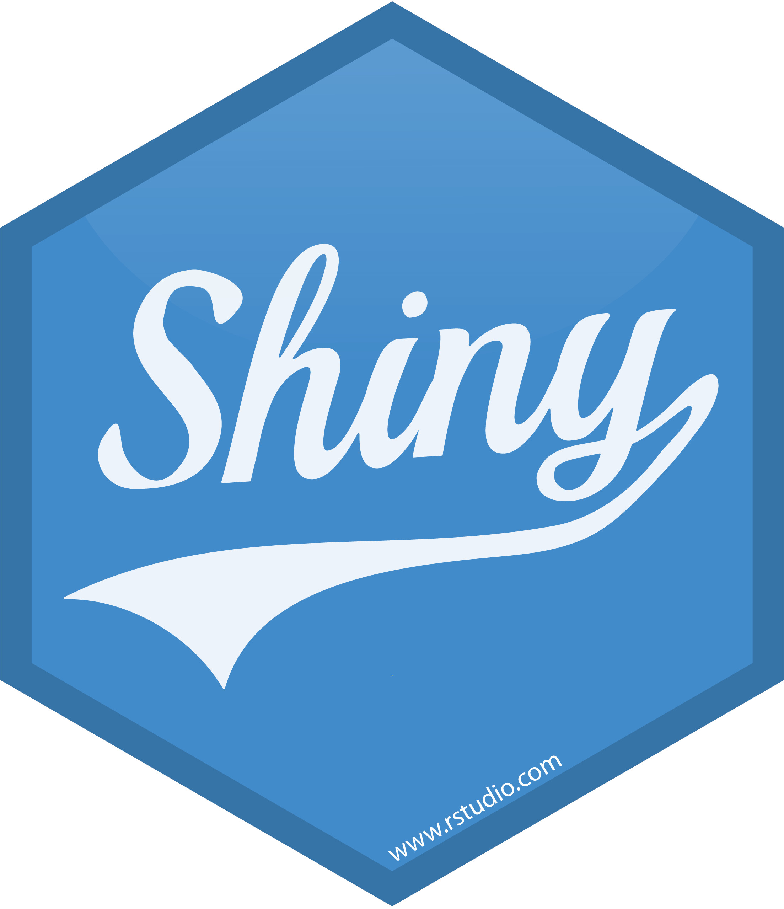
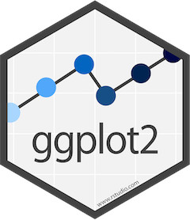

HOME
CONTENTS
PROGRAM
ABOUT
Slides
RaukR 2023 • Advanced R for Bioinformatics
List of all presentations
Best Coding Practises
Marcin Kierczak
Debugging, Profiling, and Optimization
Marcin Kierczak
Demo Slides
Roy Francis
Functions and scripts
Sebastian DiLorenzo

Interactive web apps with Shiny
Roy Francis
Introduction to Machine Learning
Nikolay Oskolkov
Object-Oriented Programming Models in R
Marcin Kierczak
Parallelisation in R
Sebastian DiLorenzo

Plotting with
ggplot2
Roy Francis
Publishing with Quarto
Roy Francis
R packages
Sebastian DiLorenzo
Reproducible research in R
Roy Francis
Reticulate
Nina Norgren
Tidy work in Tidyverse
Marcin Kierczak
Vectorization in R
Marcin Kierczak
No matching items